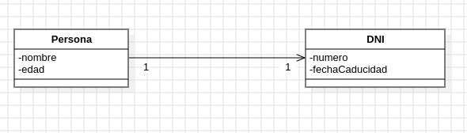
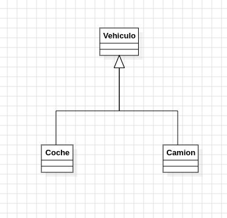
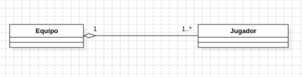
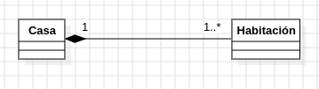
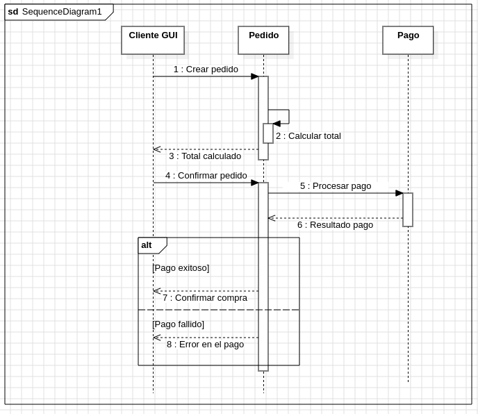
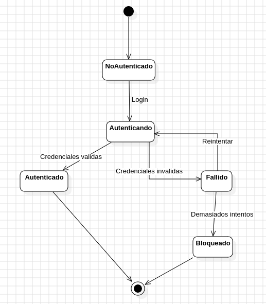
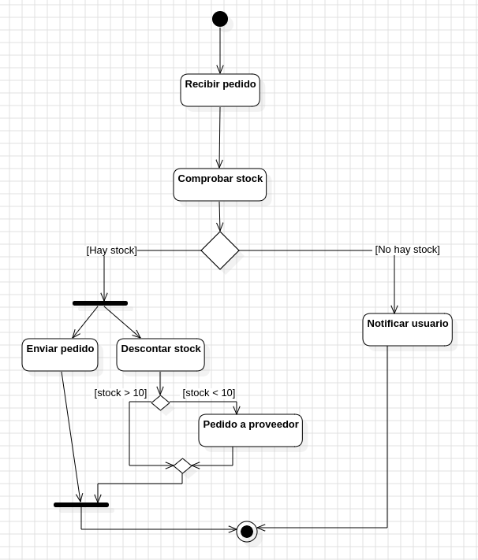
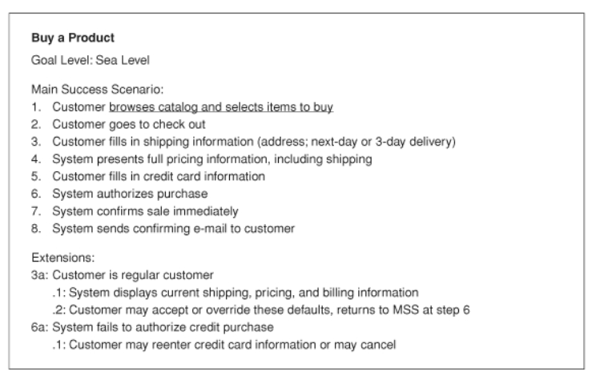
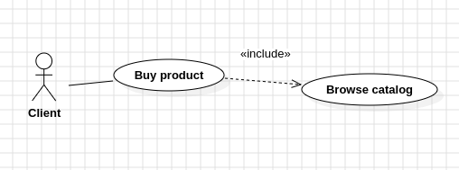

Conceptos basicos del lenguaje de modelado UML
Indica la relación de asociación entre dos clases, se indica con una flecha (abierta) que indica la navegabilidad entre las clases

El código referente a ese diagrama sería algo como el siguiente:
class Persona {
String nombre;
int edad;
String id;
DNI dni; // navegación unidireccional
}
class DNI {
String numero;
String fechaEmision;
}Es una relación "es un" entre dos clases, indica una generalización/especificación entre dos clases.
Por ejemplo un coche y un camión son vehículos (un coche "es un" vehiculo) (un camión "es un" vehiculo)

Un código que representa este diagrama sería:
// Clase base
class Vehiculo {
String marca;
void arrancar() {
System.out.println("El vehículo arranca");
}
}
// Clase especializada
class Coche extends Vehiculo {
int puertas;
}
// Clase especializada
class Camion extends Vehiculo {
double cargaMax;
}
// Clase principal
public class Main {
public static void main(String[] args) {
Coche miCoche = new Coche();
miCoche.marca = "Toyota"; // Heredado de Vehiculo
miCoche.puertas = 5; // Propio de Coche
miCoche.arrancar(); // Método heredado de Vehiculo
}
}Es una relación "parte de" entre dos clases, se representa con un rombo vacio en la clase que agrega a la otra clase
Por ejemplo un equipo estar formado por jugadores, el equipo no puede existir sin los jugadores, pero los jugadores pueden existir sin el equipo.

Un código que representa este diagrama sería:
class Equipo {
String nombre;
String ciudad;
List<Jugador> jugadores;
}
class Jugador {
String nombre;
int dorsal;
String posicion;
}Es una relacion en la que una clase no puede existir si no es dentro de otra, se representa con un rombo rellenado.
Por ejemplo en la relación casa/habitación, una habitación no puede existir si no hay una casa.

Un código que representa este diagrama sería:
class Habitacion {
private String nombre;
public Habitacion(String nombre) {
this.nombre = nombre;
}
}
class Casa {
private List<Habitacion> habitaciones;
public Casa() {
habitaciones = new ArrayList<>();
habitaciones.add(new Habitacion("Cocina"));
habitaciones.add(new Habitacion("Dormitorio"));
}
}
//Aquí Casa crea y gestiona directamente las Habitacion, reforzando la idea de composición.Los diagramas de secuencia sirven para mostrar la colaboración entre varios objetos, por lo general se usan para mostrar la colaboración en un caso de usuario.
Ejemplo para caso de uso "Hacer pedido":

Los diagramas de estado nos permiten representar el estado de un objeto.
Ejemplo mostrando la autenticación de un usuario:

Los diagramas de actividad nos permiten describir un flujo de trabajo o una lógica concreta, una de las caracteristicas que tienen tambien es que permiten expresar flujos en paralelo (dos cosas sucediendo al mismo tiempo).
Este es un ejemplo de un diagrama que muestra el flujo de funcionamiento de un pedido y como se avisa al cliente si no hay stock o como se solicitan nuevos productos a un proveedor si estamos bajos de stock.

Los casos de uso nos permiten describir los requisitos de un sistema, normalmente tiene mas importancia la propia redacción del caso de uso mas que el diagrama en si.
Una descripción de un caso de uso puede ser la siguiente (sacada de UML Distilled):

Este caso de uso lo representaríamos así:

En este ejemplo el caso de uso "browse catalog" está incluido en el "buy product", ya que para comprar un producto necesitas poder navegar por el catalogo.
UML | diagramas